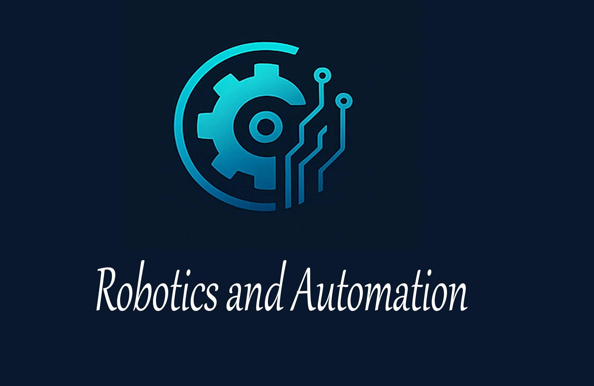

Robotics and Automation
Robotics and automation are transforming industries worldwide, revolutionizing manufacturing, logistics, healthcare, and even daily life. Robotics involves the design, construction, and operation of robots, while automation refers to the use of technology to perform tasks without human intervention. Together, these fields are enhancing efficiency, precision, and safety in various sectors. Over the past few years, advancements in artificial intelligence (AI), machine learning, and sensor technology have propelled robotics and automation to new heights.
In manufacturing, robotics has long played a central role in automating repetitive tasks. Robotic arms, for instance, are commonly used in assembly lines for tasks like welding, painting, and packaging. These robots can work tirelessly, increasing production rates while reducing the likelihood of human error. Companies like Tesla, Ford, and General Motors are integrating advanced robots to streamline vehicle production, improving both speed and consistency. With the rise of collaborative robots, or cobots, robots can now work alongside human operators, assisting them in more complex tasks without the need for safety barriers. This collaboration is enhancing flexibility and boosting overall productivity.
Automation in manufacturing isn’t just about replacing human labor; it’s about improving the entire production process. Through Industry 4.0, the integration of Internet of Things (IoT) devices, sensors, and cloud computing into manufacturing processes has enabled the creation of "smart factories." These factories are equipped with interconnected machines that can monitor their own performance, detect inefficiencies, and make adjustments in real time. This has led to the development of predictive maintenance systems, where machines can signal when they need repairs, preventing costly breakdowns and improving overall system reliability.
In the logistics and supply chain sectors, automation is reshaping how goods are moved and delivered. Autonomous robots and drones are increasingly being used in warehouses and distribution centers to move inventory more efficiently. For example, Amazon has been using robots in its fulfillment centers to transport goods from one place to another, speeding up the order fulfillment process. Additionally, self-driving trucks and drones are being developed to automate last-mile deliveries, which will make logistics faster and reduce operational costs. These systems also offer the potential for reducing traffic congestion and carbon emissions by optimizing delivery routes.
In healthcare, robotics is improving both patient care and medical procedures. Robotic surgical systems, such as the da Vinci Surgical System, allow surgeons to perform minimally invasive procedures with greater precision and control. These robots can execute delicate tasks, such as stitching or removing tissue, using tiny incisions, which leads to quicker recovery times and less risk of infection for patients. Furthermore, automation in healthcare extends to administrative tasks. AI-powered software is being used to automate patient data entry, appointment scheduling, and even diagnostic processes, allowing healthcare providers to focus more on patient care.
The use of robots is also expanding into environments previously considered dangerous or inaccessible to humans. In hazardous industries like oil drilling, mining, and nuclear power, robots are being employed to perform tasks in environments where human presence would pose significant risks. Robots equipped with advanced sensors can explore areas, repair machinery, or monitor conditions, often remotely controlled by human operators. Similarly, robots are being developed for disaster response, capable of navigating through rubble and debris to search for survivors in situations too dangerous for rescue teams.